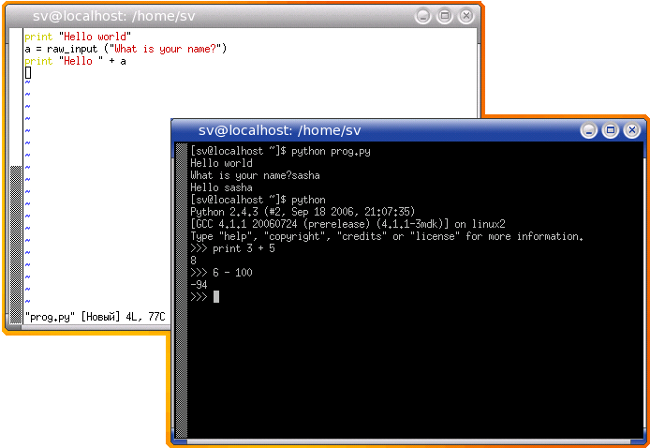
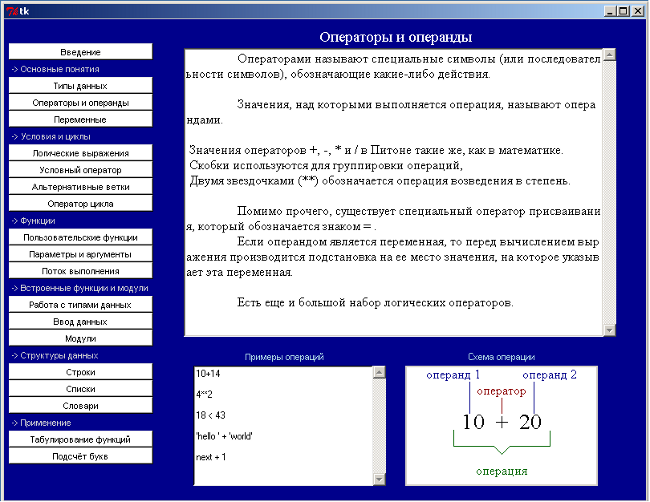
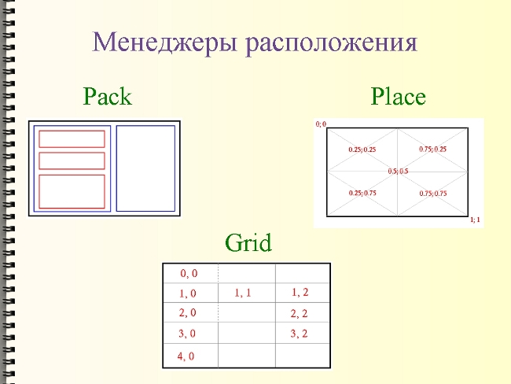
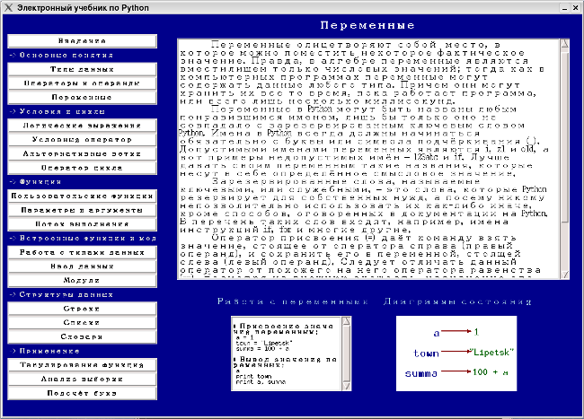

Проект "Электронный учебник по языку программирования Python"
Аннотация
Целью работы было изучить язык программирования Python и его особенности, проанализировать их, выделить главное и составить содержание будущего электронного учебника; разработать графический интерфейс учебника с помощью средств самого языка (библиотеки Tkinter); способствовать популяризации языка программирования Python.
Было изучено несколько русскоязычных источников и один англоязычный (последний касался библиотеки Tkinter) по языку Python. Далее составлены конспекты для наиболее важных понятий как по основам программирования, так и специфическим особенностям языка программирования Python. С помощью некоторых компонентов библиотеки Tkinter был разработан интерфейс учебника, который включил меню состоящее из кнопок (слева) и "рабочую" область (справа). При этом пришлось разобраться в особенностях работы менеджеров расположения, т.к. программирование графического интерфейса с помощью Tkiner относится к невизуальному проектированию.
В результате был создан краткий электронный учебник с иллюстрациями, описывающий язык программирования Python2.
| Прикрепленный файл | Размер |
|---|---|
| pt_N_1024x768.py_.txt | 130.35 кб |
| pt_N_1280x1024.py_.txt | 133.29 кб |
| pt_O_1024x768.py_.txt | 69.86 кб |
| pt_O_1280x1024.py_.txt | 69.96 кб |
План исследования к проекту "Электронный учебник по языку программирования Python"
Проблема, подлежащая исследованию:
Python является свободно распространяемым, многоплатформенным, легким для освоения языком программирования, а также поддерживает все современные парадигмы программирования (структурное, ооп, функциональное и др.). В настоящее время этот язык бурно развивается. Возможно данный язык лучше всего подходит для изучения тем, кто только приступает к серьезному программированию. Однако Питон не настолько известный язык, как скажем, Basic или Pascal, особенно среди пользователей Windows.
Гипотеза:
Для распространения этого языка можно создать небольшой электронный учебник, позволяющий желающим быстро и легко разобраться в Питоне.
Подробное описание плана исследования:
Сначала был изучен сам язык программирования. Т. к. язык не является достаточно распространенным, то всю литературу пришлось искать в интернете. Были найдены русскоязычные сайты, посвященные Питону, электронные книги. Самым сложным было разобраться в вопросах программирования графического интерфейса, т.к. вся литература, которую удалось найти по этому вопросу, была на английском языке.
Были изучены особенности создания Python-программ в ОС Linux и ОС Windows. Питон более широко распространен в Linux (в большинстве дистрибутивов он входит в стандартный набор пакетов). Большинство описаний начал программирования на Питоне касается именно этой среды. Поэтому основы программирования на Питоне были изучены в Linux (дистрибутивы ASPLinux и Debian). Затем Python был установлен в Windows и изучена интегрированная среда разработки IDLE.
Затем были выделены наиболее важные сведения. Язык Python является достаточно мощным языком программирования. Поэтому описывать все в электронном учебнике, который рассчитывался на начальный уровень, не имеет смысла. При определении разделов, которые должны были войти в учебник, были следующие позиции: материал должен касаться основ программирования, с одной стороны, и особенностей самого языка (т.е. того, что отличает его от других языков), с другой.
И наконец, был создан графический интерфейс учебника (с помощью библиотеки Tkinter), который затем был наполнен содержанием. При проектировании интерфейса учитывались общепринятые стандарты (расположение кнопок, текстовых полей). Учебник был протестирован в Linux и Windows. В обоих системах он запускался и работал. Но из-за различия шрифтов в системах окончательный вариант был адаптирован под ОС Windows.
Библиография:
- Россум, Г. и др. Язык программирования Python. / 2001 – 454 с.
- Чаплыгин А. Н. Учимся программировать вместе с Питоном. Revision: 226
- Lundh, F. Introduction to Tkinter. / 1999 – 90 c.
Описание проекта "Электронный учебник по языку программирования Python"
1. Особенности языка программирования Python
Описание
Python является простым и, в то же время, мощным интерпретируемым объектно-ориентированным языком программирования. Он предоставляет структуры данных высокого уровня, имеет изящный синтаксис и использует динамический контроль типов, что делает его идеальным языком для быстрого написания различных приложений на большинстве распространенных платформ.
Python в настоящее время является бурно развивающимся и популярным сценарным языком программирования.
Благодаря ясному синтаксису изучение языка не составляет большой проблемы. Написанные на нем программы получаются структурированными по форме, и в них легко проследить логику работы.
Python имеет богатую стандартную библиотеку и большое количество модулей расширения практически для всех нужд отрасли информационных технологий.
Возможность диалогового режима работы интерпретатора Python позволяет существенно сократить время изучения самого языка и перейти к решению задач в соответствующих предметных областях.
Python является свободным - все исходные тексты интерпретатора и библиотек доступны для любого, включая коммерческое, использования.
История
Создание Python, было начато Гвидо Ван Россумом (Guido van Rossum) в 1991 году, когда он работал над распределенной ОС Амеба. Ему требовался расширяемый язык, который бы обеспечил поддержку системных вызовов. За основу были взяты ABC и Модула-3. В качестве названия он выбрал python в честь комедийных серий BBC «Летающий цирк Монти-Питона», а вовсе не по названию змеи. С тех пор Python развивался при поддержке организаций, в которых Гвидо работал. Особенно активно язык совершенствуется в настоящее время, когда над ним работает не только команда создателей, но и целое сообщество программистов со всего мира.
Поддерживаемые парадигмы
Python поддерживает несколько парадигм программирования: императивное (процедурный, структурный, модульный подходы), объектно-ориентированное программирование, функциональное программирование, событийно-управляемые программы (GUI-приложения), форматы представления данных (Unicode, XML и т.п.).
Области применения
Как и большинство языков программирования Python имеет свои преимущества и недостатки, а так же сферы применения. В поставку Python обширная стандартная библиотека для решения широкого круга задач. В Интернете доступны качественные библиотеки для Python по различным предметным областям: средства обработки текстов и технологии Интернет, обработка изображений, инструменты для создания приложений, механизмы доступа к базам данных, пакеты для научных вычислений, библиотеки построения графического интерфейса и т.п. Кроме того, Python имеет простые средства для интеграции с языками C, C++ и Java как путем встраивания (embedding) интерпретатора в программы на этих языках, так и наоборот, посредством использования библиотек, написанных на этих языках, в Python-программах.
Python и приложения, написанные на нём, используют самые известные и крупные фирмы – IBM, Yahoo!, Godle.com, NASA, Red Hat и др. Python используют и в России. Многие компании используют его для внутренних нужд; на этом языке пишутся утилиты, фильтры, резидентные программы, GUI и Web-сайты.
Многоплатформенность
Неважно, какая операционная система установлена у вас на компьютере - Питон имеет реализации под все самые распространенные платформы: Windows, UNIX (GNU/Linux, FreeBSD и др.) и даже для Mac OS. Более того, программы написанные в одной операционной системе, будут успешно выполняться в любой другой при наличии установленного интерпретатора Питона!
Интерпретатор языка Питон распространяется свободно на основании лицензии Python Software Foundation (PSF) Licence (http://www.python.org/psf/license/), которая, в некотором роде, даже более делмкратична, чем GNU CPL (GNU General Public Licence: http://gnu.org/copyleft/). Официальный сайт проекта языка Питона располагается по адресу http://python.org/. Здесь же в разделе «Downloads» можно скачать свежую версию для любой операционной системы.
Среда разработки
В стандартный комплект поставки Питона входит интегрирования среда разработки IDLE, в которой редактировать программы будет намного удобнее, чем в простом текстовом редакторе. IDLE написан на Питоне с использованием платформонезависимой библиотеки Tcl, поэтому легко запускается в любой операционной системе, для которой существует реализация Питона. IDLE также имеет встроенную систему отладки, позволяющую запускать программу построчно, что облегчает процесс поиска ошибок.

Кроме того, в UNIX-системах есть множество редакторов, имеющих свои достоинства, как консольные (vi, emacs, встроенный редактор mc), так и графические (vim, emacs, kate и другие).

Способы использования интерпретатора
Существует два способа использования интерпретатора: командный режим и режим выполнения файлов.
Если в командной строке интерпретатора Питона вы наберете команду, то интерпретатор тут же выведет результат ее выполнения:
>>>print "Hello world!" Hello world!
Мы также можем записать программу в файл и использовать интерпретатор для того, чтобы ее выполнить. Такой файл называют сценарием или скриптом (от англ. Script-сценарий). Например, используя текстовый редактор, можно создать файл prog1.py со следующим содержанием:
print "Hello world!"
Названия файлов, содержащих программы на Питоне, приятно завершать последовательностью символов .py (те, кто работают в операционных системах DOS или Windows, называют это расширением). Для того чтобы выполнить программу, необходимо предать интерпретатору в качестве параметра название скрипта:
$ python prog1.py 'Hello world!'
2. Использование библиотеки Tkinter в создании графического интерфейса электронного учебника
Строить графический интерфейс пользователя (GUI, Graphical User Interface) для программ на языке Python можно при помощи соответствующих библиотек компонентов графического интерфейса. Самым распространённой пакетом является Tkinter.
Почти все современные графические интерфейсы общего назначения строятся по модели WIMP - Window, Icon, Menu, Pointer (окно, иконка, меню, указатель). Внутри окон рисуются элементы графического интерфейса, которые для краткости называются виджетами (widget - штучка). Меню могут располагаться в различных частях окна, но их поведение достаточно однотипно: они служат для выбора действия из набора предопределенных действий. Пользователь графического интерфейса "объясняет" компьютерной программе требуемые действия с помощью указателя. Обычно указателем служит курсор мыши или джойстика, однако есть и другие "указательные" устройства. С помощью иконок графический интерфейс приобретает независимость от языка и в некоторых случаях позволяет быстрее ориентироваться в интерфейсе.
Основной задачей графического интерфейса является упрощение коммуникации между пользователем и компьютером. Об этом следует постоянно помнить при проектировании интерфейса. Применение имеющихся в наличии у программиста (или дизайнера) средств при создании графического интерфейса нужно свести до минимума, выбирая наиболее удобные пользователю виджеты в каждом конкретном случае. Кроме того, полезно следовать принципу наименьшего удивления: из формы интерфейса должно быть понятно его поведение. Плохо продуманный интерфейс портит ощущения пользователя от программы, даже если за фасадом интерфейса скрывается эффективный алгоритм. Интерфейс должен быть удобен для типичных действий пользователя. [2]
В связи с этим был разработан удобный интерфейс для учебника, который логично разделён на две части: меню, где осуществляется выбор того или иного раздела учебника и область для чтения, где отображается содержание разделов учебника, коды программ и изображения. В принципе, это стандартная система организации многих электронных учебников.
Основная черта любой программы с графическим интерфейсом - интерактивность. Программа не просто что-то считает (в пакетном режиме) от начала своего запуска до конца: ее действия зависят от вмешательства пользователя. Фактически, графическое приложение выполняет бесконечный цикл обработки событий. Программа, реализующая графический интерфейс, событийно-ориентирована. Она ждет от интерфейса событий, которые и обрабатывает сообразно своему внутреннему состоянию.
Эти события возникают в элементах графического интерфейса (виджетах) и обрабатываются прикрепленными к этим виджетам обработчиками. Сами виджеты имеют многочисленные свойства (цвет, размер, расположение), выстраиваются в иерархию принадлежности (один виджет может быть хозяином другого), имеют методы для доступа к своему состоянию.
Для связи между виджетами в Tk используются переменные, через которые виджеты и передают друг другу параметры. [2]
В нашем учебнике были использованы следующие виджеты:
- Button (Кнопка) Простая кнопка для вызова некоторых действий (выполнения определенной команды).
- Canvas (Рисунок) Основа для вывода графических примитивов.
- Frame (Рамка) Виджет, который содержит в себе другие визуальные компоненты.
- Label (Надпись) Виджет может показывать текст или графическое изображение.
- Text (Форматированный текст) Этот прямоугольный виджет позволяет редактировать и форматировать текст с использованием различных стилей, внедрять в текст рисунки и даже окна.
Кроме виджет из Tkinter, нами был использован виджет ScrolledText из одноименного модуля Python. Этот виджет аналогичен рамке с текстом и вертикальной полосой прокрутки. Это позволило нам упростить создание текстового поля с прокруткой, которое было необходимо для расширения функциональности учебника.
Разработка интерфейса с помощью Tkinter относится к невизуальному программированию. Поэтому много внимания приходится уделять менеджерам расположения. Виджет устанавливается на место по правилам того или иного менеджера расположения. В Tkinter есть три менеджера расположения: pack (простой упаковщик), place (произвольное расположение) и grid (сетка). Нами было использованы методы pack и place.
Содержание электронного учебника
Разработанный нами краткий электронный учебник по языку программирования Python включает следующие разделы:
Введение
Основные понятия
Типы данных
Операторы и операнды
Переменные
Условия и циклы
Логические выражения
Условный оператор
Альтернативные ветки
Оператор цикла
Функции
Пользовательские функции
Параметры и аргументы
Поток выполнения
Встроенные функции и модули
Работа с типами данных
Ввод данных
Модули
Структуры данных
Строки
Списки
Словари
Применение
Табулирование функций
Подсчет букв
Данные разделы коснулись основных понятий и принципов программирования в общем и языка Python в частности. Например, в разделе «Основные понятия» были затронуты такие понятия как различные типы данных (число, строка и др.), понятие переменной, что характерно для любого языка программирования. А уже в разделе структуры данных рассматриваются специфические для Python типы данных - последовательности и словари. Поскольку Python модульный язык было удаленно внимание различным модулям.
Для многих разделов учебника были созданы изображения (блок-схемы циклов, условий и др.). Они запрограммированны с помощью свойств и методов объекта Canvas.
В приложении 3 представлен внешний вид электронного учебника.

Литература
- Россум, Г. и др. Язык программирования Python. / 2001 – 454 с.
- Сузи Р. А. Язык программирования Python. Бином, 2006 - 328 с.
- Чаплыгин А. Н. Учимся программировать вместе с Питоном. Revision: 226
- Lundh, F. Introduction to Tkinter. / 1999 – 90 c.
Интернет-ресурсы
- http://python.org/
- http://www.pythonware.com/
- http://python.ru/
Доклад к проекту "Электронный учебник по языку программирования Python"
Целью нашей работы было создание электронного учебника по языку программирования Python, который в настоящее время активно развивается и набирает популярность. Однако русскоязычной документации по этому языку не так уж и много.
Питон создал в 1991 году голандец Гвидо Ван Россум и назвал так в честь комедийного сериала.
Следует отметить следующие особенности этого языка:
- Во-первых – ясный синтаксис. В других языках для указания программного блока (например , цикла или функции) используют больше специальных символов или ключевых слов, поэтому код получается более громоздким. В Питоне же их меньше. Зато очень важны отступы: они то и выполняют роль, скажем так, "указателя" на тот или иной программный блок. В результате программный код, написанный на языке Питон, получается более компактным и легко читаемым. Эту особенность можно увидеть, если сравнить цикл while на Паскале и Питоне: [слайд] в последнем случае код получается более компактный, однако наличие отступов в теле цикла является обязательным.

- Python – это универсальный язык высокого уровня, поддерживающий большинство стилей программирования: структурное, объектно-ориентированное, функциональное программирование и другие.
- Следующей особенностью Python можно отметить его модульность: он имеет большое количество модулей расширения практически по всем отраслям: средства обработки текстов и изображений, технологии Интернет, механизмы доступа к базам данных, пакеты для научных вычислений и т.п.
- Также Питон имеет варианты под все самые распространенные операционные системы. И программы написанные в одной операционной системе, будут работать в другой, если установлен интерпретатор Питона.
- Интерпретатор распространяется свободно на основании лицензии подобной GNU General Public Licence, под которой распространяется большинство свободного программного обеспечения.
Официальный сайт Питона – http://python.org/. Есть несколько русскоязычных ресурсов по Python`у: самый большой из них http://python.ru/. Помимо прочего, там собрана вся русскоязычная документация. Однако ее не так уж и много, а та что есть больше подходит для профессиональных программистов. Поэтому мы решили создать небольшой электронный учебник для начинающих программистов. Кстати, Питон может быть хорош для начинающих из-за своего легкого синтаксиса.
Содержание учебника в основном формировалось нами на переработке двух книг: Чаплыгин А. Н. Учимся программировать вместе с Питоном и Россум, Г. и др. Язык программирования Python.
Содержание учебника формировалось из основных понятий, характерных для большинства языков программирования. Например, таких как типы данных, условия, циклы, функции. А также из специфических для самого Питона. Например, модули, последовательности и словари, а также некоторые возможные области применения Питона. Во втором варианте учебника мы также сделали раздел посвящённый основным парадигмам программирования (структурному, функциональному и объектно-ориентированному).[демонстрация второго варианта учебника]
Нами был создан небольшой электронный учебник по Питону, с помощью средств самого языка. Графический интерфейс был создан с помощью библиотеки Tkinter, которая входит в стандартную поставку.
В учебнике есть меню из кнопок, текстовые поля с полосами прокрутки для текста и примеров программ, а также так называемый холст для рисунков. Холст – это экземпляр объекта canvas. Изображения на нем (например, линии, прямоугольники) были получены с помощью соответствующих методов. Существует два варианта учебника: в одном – графика и примеры программ располагаются во внешних виджетах по отношению к основному тексту [демонстрация первого варианта учебника]; в другом – внутри [демонстрация второго варианта учебника]. Tkinter содержит методы позволяющие одни текстовые поля и холсты вставлять в другие.
Конструирование графического интерфейса в Питоне является невизуальным, поэтому используются так называемые менеджеры расположения. В Tkinter есть три менеджера расположения: pack (простой упаковщик), place (произвольное расположение) и grid (сетка). В учебнике были использованы методы pack и place. [слайд]

[Перезагрузка системы]
Учебник работает как в операционной системе Windows, так и Linux. Однако в любой системе должны быть заранее установленны интерпретатор Питона и модуль Tkinter. Для того, чтобы открыть учебник в Windows достаточно два раза кликнуть файл, а в Linux его можно открыть из консоли передав команде python в качестве параметра имя файла.
Как вы можете заметить, в Linux учебник выгладит немного по-другому. Это связано с тем, что здесь в системе присутствуют другие шрифты; и большинства шрифтов, которые есть в Windows, нет. Это единственная проблема, с которой мы столкнулись при переносе учебника из одной операционной системы в другую, однако она достаточно существенная. К тому же, мы проверяли учебник в разных дистрибутивах Линукс и везде он выглядел по своему. На данный момент проблема решается, можно сказать, механически – просто открывается исходный код изменяются параметры связанные со шрифтами. Хотя это сделать и достаточно просто, мы пришли к выводу, что лучше сделать отдельные функции, содержащие метоты для форматирования текста в той или иной операционной системе, а пользователю просто позволить выбирать ту или иную схему в зависимости от системы.
Применение Python
Первое, что можно рассмотреть, как возможную область применения Питона – это построение таблиц значений функций.
Большинство учебников по математике имеют приложения с таблицами значений различных функций. Раньше такие таблицы создавались вручную. Сейчас это делают с помощью компьютера. С помощью Питона можно быстро запрограммировать создание таких таблиц: достаточно использовать лишь цикл и символ табуляции (отступа).[пример таблицы степеней двойки] Также можно построить двумерную таблицу, если использовать вложенный цикл. Для примера можно взять таблицу умножения. В принципе сюда можно подставить любую формулу.

x=0 while x<=10: print x, "\t", 2**x x=x+1 raw_input()
i = 1 while i <= 10: j = 1 while j <= 10: print i * j, "\t", j = j + 1 print i = i + 1 raw_input()
Также Питон можно использовать для написания программ для научных вычислений. Напрмер, анализа выборки.
Часто требуется проанализировать какой-то ряд значений и определить количество значений, попавших в определенный диапазон. [слайд]

Можно создать функцию, которая будет просматривать список значений и считать количество значений, попадающих в один определенный диапазон.[слайд] И затем вызывать эту функцию, подставляя разные аргументы.[слайд]
def inBucket(list,low,high): count = 0 for num in list: if low<= num < high: count += 1 print count a = [54, 53, 43, 39, 56, 49, 36, 34, \ 38, 56, 43, 60, 51, 45, 43, 41, 48, 58, 39, 36] inBucket (a, 50, 60) raw_input()
Можно усовершенствовать программу, так, чтобы она запрашивала у пользователя сам список значений [работа с программой], нижнюю границу первого диапазона, верхнюю – последнего и количество требуемых диапазонов. В итоге, программа будет выдавать сколько значений попало в каждый диапазон.
def inBucket(list,low,high): count = 0 for num in list: if low<= num < high: count += 1 print count a = input ("input list: " ) low = input ("input low: ") high = input ("input high: ") numBuckets = input ("input numBuckets: ") bucketWidth = (high-low)/numBuckets buckets=[0]* numBuckets high = low for i in range (numBuckets): low = high high = bucketWidth + high print low, "to", high buckets[i]=inBucket(a,low,high) buckets raw_input()
Но еще более оригинальный способ решения похожей задачи – это использование одного из типов данных Питона – словаря. Используя его, можно потом строить гистограммы букв в строке, т.е. вычислять сколько раз каждая буква появляется в строке. Такие гистограммы могут пригодиться для расшифровки кодов, или для компрессии текстовых файлов. Так как различные буквы появляются с различными частотами, мы можем сжать файл, используя короткие коды для распространенных букв и длинные коды для букв, которые появляются менее часто.

[работа с программой] Начинаем с пустого словаря. Для каждой буквы в строке мы находим текущий счетчик и увеличиваем его на единицу. В конце словарь содержит пары: буквы и их частоты.
a=raw_input("Input string: ") letterCounts = {} for letter in a: letterCounts[letter]=letterCounts.get (letter, 0) + 1 print letterCounts raw_input()
В итоге можно сказать, что Питон – это идеальный язык для быстрого написания различных приложений, при этом код получается более компактный.
| Прикрепленный файл | Размер |
|---|---|
| Презентация к докладу | 83.59 кб |
Статья по проекту "Электронный учебник по языку программирования Python" в сборник докладов
Язык программирования Python в настоящее время активно развивается и набирает популярность. Это универсальный язык высокого уровня, поддерживающий большинство стилей программирования (структурное, объектно-ориентированное, функциональное программирование и др.). Интерпретатор языка распространяется свободно на основании лицензии подобной GNU General Public Licence, под которой распространяется большинство свободного программного обеспечения. Кроме того, язык имеет ясный синтаксис. Так, в других языках для указания программного блока (например, цикла или функции) используется больше специальных символов и ключевых слов; в результате код получается более громоздким. В Питоне же важны отступы: они то и выполняют роль "указателей" определенного программного блока. В результате программный код, написанный на языке Питон, получается более компактным и легко читаемым, что может иметь важное значение для начинающих программистов.
Официальный сайт Питона – http://python.org/. Есть несколько русскоязычных ресурсов по Python`у: самый большой из них http://python.ru/. Помимо прочего, там собрана вся русскоязычная документация. Однако ее не так уж и много, и в основном она ориентированна на профессиональных программистов.
Поскольку Python легок для освоения, и при программировании на нем получаются ясные синтаксические конструкции, то, на наш взгляд, он прекрасно подходит для изучения основ программирования. Для распространения Python в качестве первого языка программирования нами был создан электронный учебник по данному языку (рис. 1).

Рис. 1. Интерфейс электронного учебника
В первых разделах учебника рассматриваются основные понятия, характерные для большинства языков программирования. Например, таких как, типы данных, условия, циклы, функции. Далее рассматриваются модули, последовательности и словари. Во втором варианте учебника был создан раздел, посвященный основным парадигмам программирования (структурному, функциональному и объектно-ориентированному). Кроме того, учебник содержит примеры практической значимости Питона.
Принципиальным моментом было создание электронного учебника с помощью средств самого языка. В программном коде учебника условно можно выделить четыре части: подключение модулей, блок функций, программирование виджет (графического интерфейса) и их размещение (рис. 2).

Рис. 2. Схема структуры программного кода электронного учебника
Графический интерфейс был создан с помощью библиотеки Tkinter, которая входит в стандартную поставку интерпретатора Питона. В учебнике есть меню из кнопок, текстовые поля с полосами прокрутки для текста и примеров программ, а также так называемый холст для рисунков. Холст – это экземпляр объекта canvas. Изображения на нем (например, линии, прямоугольники) были получены с помощью соответствующих методов. На данный момент существует два варианта учебника. В первом случае графика и примеры программ располагаются во внешних виджетах по отношению к основному текстовому полю; в другом – внутри: Tkinter содержит методы, позволяющие одни текстовые поля и холсты вставлять в другие.
Конструирование графического интерфейса с помощью Tkinter относится к невизуальному проектированию, поэтому использовались так называемые менеджеры расположения. В Tkinter их три: pack (простой упаковщик), place (произвольное расположение) и grid (сетка). В учебнике были использованы методы pack и place.
Учебник работает как в операционных системах семейства Windows, так и Linux при наличии установленного интерпретатора и библиотеки Tkinter. Однако существует небольшая проблема связанная со шрифтами, т.к. каждая система имеет свой набор шрифтов по умолчанию. Данная проблема решается простой заменой названий шрифтов в коде. Для удобства, во второй версии учебника была создана отдельная функция, содержащая методы для форматирования текста.
Созданный нами электронный учебник по языку программирования Python может способствовать распространению данного языка, по крайней мере, среди русскоговорящего населения. В дальнейшем планируется его улучшить и выложить в Интернет.
Литература
- Россум, Г. и др. Язык программирования Python. / 2001 – 454 с.
- Сузи Р. А. Язык программирования Python. Бином, 2006 - 328 с.
- Чаплыгин А. Н. Учимся программировать вместе с Питоном. Revision: 226
Интернет-ресурсы
- http://python.org/
- http://www.pythonware.com/
- http://python.ru/